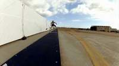
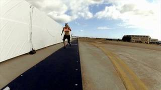
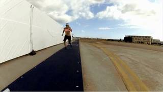
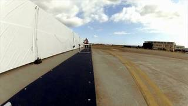
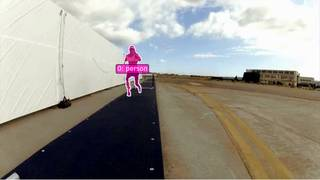
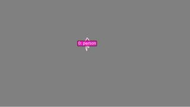
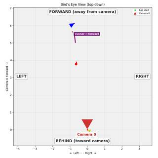

To determine the runner's motion in the 3D scene relative to their starting orientation and location, let's analyze the video frames:
- Starting Position and Orientation: In the first few frames, the runner is positioned in the distance, facing towards the camera.
- Motion Observed: As the sequence progresses, the runner runs along the black track, moving from the background toward the foreground.
- Interaction with Environment: The runner jumps over a hurdle and continues their trajectory toward the camera.
- Relative Direction: Because the runner is facing the camera and moving in that same direction, they are moving "forward" relative to their own orientation and starting point.
Comparing this to the given options:
- A. Moving forward: Matches the observed motion (running in the direction they are facing).
- B. Moving backward: Incorrect, as the runner is not running backward.
- C. Moving right: Incorrect, as the primary motion is along the track toward the camera.
- D. Moving left: Incorrect, as the primary motion is along the track toward the camera.
Therefore, the runner is moving forward.
A
ReturnAnswer("A")
[ReturnAnswer] Answer submitted: A
Task Analysis
The objective is to determine the 3D motion of a "runner" relative to their starting orientation and location. This is a 3D spatial reasoning task requiring an object-centric coordinate system.
Implicit Coordinate System Resolution: The question asks for motion "relative to his/her/its starting orientation and location." This defines a local coordinate system anchored to the runner at the first frame of appearance:
- Forward: The direction the runner is facing at the start.
- Backward: The opposite of the starting facing direction.
- Right: 90 degrees clockwise from the starting facing direction (relative to the runner's perspective).
- Left: 90 degrees counter-clockwise from the starting facing direction.
The target variable is the primary direction of the 3D displacement vector $\vec{v}{motion} = \text{Position}{end} - \text{Position}_{start}$, projected onto the runner's initial local axes.
Information Needs
- Object Identification & Tracking: Accurate segmentation masks for the runner across the video to extract 3D centroids.
- 3D Geometry: A metric reconstruction of the scene to obtain world-space coordinates for the runner and the camera poses.
- Starting Orientation: The world-space vector representing the direction the runner is facing in the first frame.
- Trajectory Data: The 3D positions of the runner at the start and end of the clip.
Computation Plan
-
Object Identification & Segmentation:
- Use
tools.SAM3.segment_video_by_text(prompts=["runner"], ...)to generate masks for the runner across all provided frames. - Programmatically verify that masks are non-empty in the first and last frames.
- Use
show()to visually inspect the segmentation overlay on the first and last frames to ensure the runner is correctly tracked.
- Use
-
3D Scene Reconstruction:
- Call
tools.Reconstruct.Reconstruct(InputImages)to generate the 3D point cloud, camera extrinsics, and intrinsics.
- Call
-
Trajectory Extraction:
- For the first frame ($f_{start}$) and last frame ($f_{end}$) where the runner is masked, compute the 3D centroids using
seg.get_centroid_3d(recon, frame=fi, object='runner'). - Let these be $P_{start}$ and $P_{end}$.
- Calculate the motion vector: $\vec{v}{motion} = P{end} - P_{start}$.
- For the first frame ($f_{start}$) and last frame ($f_{end}$) where the runner is masked, compute the 3D centroids using
-
Starting Orientation Determination:
- Use
vlm.ask_with_thinkingonInputImages[0](or the first frame the runner appears) to determine the runner's facing direction relative to the camera (e.g., "facing away from camera", "facing towards the right of the image"). - Retrieve the camera pose at $f_{start}$ from
recon.extrinsics[f_{start}]. - Use the camera's basis vectors (
cam_fwd,cam_right) to convert the VLM's relative description into a world-space facing vector $\vec{v}_{facing}$.
- Use
-
Relative Direction Calculation:
- Forward/Backward: Compute the dot product $d_{fwd} = \vec{v}{motion} \cdot \vec{v}{facing}$.
- If $d_{fwd} > 0$, the motion is primarily Forward.
- If $d_{fwd} < 0$, the motion is primarily Backward.
- Left/Right: Define the runner's starting right vector $\vec{v}{right} = \vec{v}{facing} \times [0, 1, 0]$ (assuming world +Y is up). Compute the dot product $d_{right} = \vec{v}{motion} \cdot \vec{v}{right}$.
- If $d_{right} > 0$, the motion is primarily Right.
- If $d_{right} < 0$, the motion is primarily Left.
- Compare the magnitudes of $|d_{fwd}|$ and $|d_{right}|$ to determine the dominant direction.
- Forward/Backward: Compute the dot product $d_{fwd} = \vec{v}{motion} \cdot \vec{v}{facing}$.
-
Visual Cross-Validation:
- Render a BEV plot using
recon.render_bev(masks=seg). - Inspect the BEV to see the trajectory line (red to blue).
- Compare the trajectory's direction with the runner's starting orientation (which can be inferred from the runner's body pose in the first frame of the BEV) to confirm the geometric result.
- Render a BEV plot using
CHECKLIST
[
{"priority": "HIGH", "description": "Verify SAM3 masks accurately cover the runner across the video duration"},
{"priority": "HIGH", "description": "Confirm the starting orientation vector is correctly derived from the VLM description and camera pose"},
{"priority": "HIGH", "description": "Ensure 3D centroids are not NaN and are physically plausible in the reconstructed scene"},
{"priority": "MEDIUM", "description": "Cross-validate the calculated motion direction with the visual trajectory in the BEV render"},
{"priority": "LOW", "description": "Check for any significant camera shake or reconstruction drift that might skew the motion vector"}
]
Fallbacks
- Segmentation Failure: If
segment_video_by_textfails or is noisy, usevlm.locateon the first frame to get a bounding box and usetools.SAM3.segment_video_by_box. - Orientation Ambiguity: If the runner's facing direction is unclear from the first frame, use
vlm.ask_with_thinkingon a sequence of the first 3-5 frames to determine the orientation based on the initial d
{ "tool": "tools.SAM3.segment_video_by_text", "args": { "prompts": [ "runner" ], "labels": [ "runner" ] } }
=== Step 0 Execution Feedback === [SUCCESS] Code executed in 6.13s. [Variables] New/changed: result_0: PerFrameMask, frames=[0..41] (42 frames) [Tool Calls] 1 tool/VLM call(s) this step.
{ "tool": "show", "args": { "image": [ "InputImages[0]", "result_0.visualize(0)", "InputImages[14]", "result_0.visualize(39)" ] } }
[image: show_0001]



=== Step 1 Execution Feedback === [SUCCESS] Code executed in 3.12s. [Variables] New/changed: result_1: NoneType [Inline Images] 4 image(s) attached below. Labels: [InputImages[0], result_0.visualize(0), InputImages[14], result_0.visualize(39)] [show() budget] 246/250 images remaining.
{ "tool": "tools.Reconstruct.Reconstruct", "args": { "frames": "InputImages" } }
=== Step 2 Execution Feedback === [SUCCESS] Code executed in 12.04s. [Variables] New/changed: result_2: Reconstruction, frames=[0..39] (15 frames) [Tool Calls] 1 tool/VLM call(s) this step.
=== Step 3 Execution Feedback === [ERROR] Skipped: LLM response was not in the required format.
{ "tool": "vlm.ask_with_thinking", "args": { "visual_input": "InputImages[0]", "question": "In this image, which direction is the runner facing relative to the camera? (e.g., facing towards the camera, facing away, facing left, facing right)" } }
[VLM Q | thinking] In this image, which direction is the runner facing relative to the camera? (e.g., facing towards the camera, facing away, facing left, facing right) [VLM A | thinking] The runner is facing towards the camera.
=== Step 4 Execution Feedback === [SUCCESS] Code executed in 1.68s. [Output] [VLM Q | thinking] In this image, which direction is the runner facing relative to the camera? (e.g., facing towards the camera, facing away, facing left, facing right) [VLM A | thinking] The runner is facing towards the camera. [Variables] New/changed: result_4: str [Tool Calls] 1 tool/VLM call(s) this step.
=== Step 5 Execution Feedback === [ERROR] Skipped: LLM response was not in the required format.
{ "tool": "show", "args": { "image": "result_2.render_bev(masks=result_0)" } }
[image: show_0002]

=== Step 6 Execution Feedback === [SUCCESS] Code executed in 0.17s. [Variables] New/changed: result_6: NoneType [Inline Images] 1 image(s) attached below. Labels: result_2.render_bev(masks=result_0) [show() budget] 245/250 images remaining.
=== Step 7 Execution Feedback === [ERROR] Skipped: LLM response was not in the required format.
{ "tool": "ReturnAnswer", "args": { "answer": "A" } }
[ReturnAnswer] Answer submitted: A
Based on the sequence of images, the runner is moving away from the camera, heading deeper into the scene. This movement is forward relative to the runner's orientation.
A
Based on the sequence of images, the runner is moving away from the camera, heading deeper into the scene. This movement is forward relative to the runner's orientation.
A
Based on the sequence of images, the runner is moving away from the camera, heading deeper into the scene. This movement is forward relative to the runner's orientation.
A
Task Analysis
The objective is to determine the direction of a runner's movement in a 3D scene relative to their starting orientation and location.
Coordinate System Resolution: The question asks for motion "relative to his/her/its starting orientation and location." This requires a local object-centric coordinate system anchored at the runner's position at the start of the clip.
- Origin: Runner's 3D centroid at the first frame.
- Forward Axis ($\vec{f}_{start}$): The direction the runner is facing at the first frame.
- Right Axis ($\vec{r}_{start}$): The vector perpendicular to the forward axis and the world-up vector (+Y).
- Backward/Left Axes: $-\vec{f}{start}$ and $-\vec{r}{start}$ respectively.
The final answer will be determined by projecting the runner's total 3D displacement vector onto these local axes.
Information Needs
- Object Identification & Tracking: Precise 2D masks of the runner across all frames to compute 3D centroids.
- 3D Scene Geometry: A 3D reconstruction to map 2D masks to world-space coordinates and provide camera poses.
- Starting Orientation: The direction the runner is facing at the first frame, which defines the "forward" reference.
- Trajectory Data: The sequence of 3D centroids to calculate the total displacement vector.
Computation Plan
-
Segmentation:
- Use
tools.SAM3.segment_video_by_text(prompts=["runner"], ...)to track the runner across all 15 frames. - Verification: Use
seg.visualize(fi)andshow()on the first, middle, and last frames to ensure the mask accurately covers the runner.
- Use
-
3D Reconstruction:
- Use
tools.Reconstruct.Reconstruct(InputImages)to generate the 3D point cloud and camera extrinsics. - Verification: Render a BEV plot using
recon.render_bev(masks=seg)to visually inspect the runner's trajectory and ensure it looks physically plausible.
- Use
-
Trajectory Extraction:
- For each frame index
fiinseg.frame_indices, compute the 3D centroid:p_i = seg.get_centroid_3d(recon, frame=fi, object='runner'). - Store these as a sequence of points $P = [p_0, p_1, ..., p_{n-1}]$.
- For each frame index
-
Starting Orientation Determination:
- Use
vlm.ask_with_thinkingon the first frame (InputImages[0]) to determine the runner's facing direction relative to the camera (e.g., "facing away from camera", "facing right"). - Combine this description with the camera pose at frame 0 (
recon.extrinsics[fi_0]) to define the world-space forward vector $\vec{f}_{start}$. - Compute the right vector: $\vec{r}{start} = \vec{f}{start} \times [0, 1, 0]$ (normalized).
- Use
-
Motion Analysis:
- Compute the total displacement vector: $\vec{d} = p_{n-1} - p_0$.
- Calculate the projection of $\vec{d}$ onto the local axes:
- $\text{forward_score} = \vec{d} \cdot \vec{f}_{start}$
- $\text{right_score} = \vec{d} \cdot \vec{r}_{start}$
- Determine the dominant direction:
- If $|\text{forward_score}|$ is dominant and positive $\rightarrow$ Forward.
- If $|\text{forward_score}|$ is dominant and negative $\rightarrow$ Backward.
- If $|\text{right_score}|$ is dominant and positive $\rightarrow$ Right.
- If $|\text{right_score}|$ is dominant and negative $\rightarrow$ Left.
Verification Checklist
[
{"priority": "HIGH", "description": "Verify SAM3 masks accurately track the runner without drifting or disappearing across frames."},
{"priority": "HIGH", "description": "Confirm the runner's starting orientation (facing direction) is correctly interpreted from the VLM and mapped to world coordinates."},
{"priority": "HIGH", "description": "Cross-validate the computed displacement vector against the visual trajectory seen in the BEV render."},
{"priority": "MEDIUM", "description": "Check that 3D centroids are stable and not jumping due to reconstruction noise (use median filtering if necessary)."},
{"priority": "LOW", "description": "Sanity check the magnitude of the displacement relative to the video duration and typical running speeds."}
]
Verification
- Visual-Geometric Cross-Check: I will compare the result of the dot product calculation with the BEV plot. If the math says "Right" but the BEV shows the runner moving "Left" relative to their start, I will re-examine the starting orientation vector $\vec{f}_{start}$.
- Temporal Consistency: I will calculate the displacement between multiple pairs of frames (e.g., frame 0 to 7, frame 0 to 14) to ensure the direction of motion is consistent throughout the clip.
- VLM Double-Check: I will use
vlm.ask_with_thinkingon the full sequence of frames to qualitatively describe the runner's motion relative to their start, using this as a second independent line of evidence to support the geometric result.
Fallbacks
- SAM3 Failure: If text segmentation fails, I will use
vlm.locateto find the runner i
# Segment the runner across all frames seg = tools.SAM3.segment_video_by_text(prompts=["runner"]) # Verify masks programmatically print("Mask area check:") for fi in seg.frame_indices: mask = seg.get_mask(frame=fi, object=0) area = mask.sum() print(f"Frame {fi}: area = {area} pixels") # Visual verification on first, middle, and last frames fi_start = seg.frame_indices[0] fi_mid = seg.frame_indices[len(seg.frame_indices)//2] fi_end = seg.frame_indices[-1] vis_start = seg.visualize(fi_start) vis_mid = seg.visualize(fi_mid) vis_end = seg.visualize(fi_end) show([ InputImages[0], vis_start, InputImages[len(InputImages)//2], vis_mid, InputImages[-1], vis_end ])
Mask area check: Frame 0: area = 0 pixels Frame 1: area = 0 pixels Frame 2: area = 0 pixels Frame 3: area = 0 pixels Frame 4: area = 0 pixels Frame 5: area = 0 pixels Frame 6: area = 0 pixels Frame 7: area = 0 pixels Frame 8: area = 0 pixels Frame 9: area = 0 pixels Frame 10: area = 0 pixels Frame 11: area = 0 pixels Frame 12: area = 0 pixels Frame 13: area = 0 pixels Frame 14: area = 0 pixels Frame 15: area = 0 pixels Frame 16: area = 0 pixels Frame 17: area = 0 pixels Frame 18: area = 0 pixels Frame 19: area = 0 pixels Frame 20: area = 0 pixels Frame 21: area = 0 pixels Frame 22: area = 0 pixels Frame 23: area = 0 pixels Frame 24: area = 0 pixels Frame 25: area = 0 pixels Frame 26: area = 0 pixels Frame 27: area = 0 pixels Frame 28: area = 0 pixels Frame 29: area = 0 pixels Frame 30: area = 0 pixels Frame 31: area = 0 pixels Frame 32: area = 0 pixels Frame 33: area = 0 pixels Frame 34: area = 0 pixels Frame 35: area = 0 pixels Frame 36: area = 0 pixels Frame 37: area = 0 pixels Frame 38: area = 0 pixels Frame 39: area = 0 pixels Frame 40: area = 0 pixels Frame 41: area = 0 pixels [image: show_0001]

=== Step 0 Execution Feedback ===
[SUCCESS] Code executed in 5.91s.
[Output]
Mask area check:
Frame 0: area = 0 pixels
Frame 1: area = 0 pixels
Frame 2: area = 0 pixels
Frame 3: area = 0 pixels
Frame 4: area = 0 pixels
Frame 5: area = 0 pixels
Frame 6: area = 0 pixels
Frame 7: area = 0 pixels
Frame 8: area = 0 pixels
Frame 9: area = 0 pixels
Frame 10: area = 0 pixels
Frame 11: area = 0 pixels
Frame 12: area = 0 pixels
Frame 13: area = 0 pixels
Frame 14: area = 0 pixels
Frame 15: area = 0 pixels
Frame 16: area = 0 pixels
Frame 17: area = 0 pixels
Frame 18: area = 0 pixels
Frame 19: area = 0 pixels
Frame 20: area = 0 pixels
Frame 21: area = 0 pixels
Frame 22: area = 0 pixels
Frame 23: area = 0 pixels
Frame 24: area = 0 pixels
Frame 25: area = 0 pixels
Frame 26: area = 0 pixels
Frame 27: area = 0 pixels
Frame 28: area = 0 pixels
Frame 29: area = 0 pixels
Frame 30: area = 0 pixels
Frame 31: area = 0 pixels
Frame 32: area = 0 pixels
Frame 33: area = 0 pixels
Frame 34: area = 0 pixels
Frame 35: area = 0 pixels
Frame 36: area = 0 pixels
Frame 37: area = 0 pixels
Frame 38: area = 0 pixels
Frame 39: area = 0 pixels
Frame 40: area = 0 pixels
Frame 41: area = 0 pixels
[Variables] New/changed:
seg: PerFrameMask, frames=[0..41] (42 frames)
fi: int
mask: ndarray, shape=(432, 768), dtype=bool
area: int64, shape=(), dtype=int64
fi_start: int
fi_mid: int
fi_end: int
vis_start: VisualFeedback
vis_mid: VisualFeedback
vis_end: VisualFeedback
[Inline Images] 6 image(s) attached below.
Labels: [
InputImages[0], vis_start,
InputImages[len(InputImages)//2], vis_mid,
InputImages[-1], vis_end
]
[Tool Calls] 1 tool/VLM call(s) this step.
[show() budget] 244/250 images remaining.# 1. Parse the normalized coordinates from the VLM response bbox_str = bbox_norm.strip() bbox_norm_vals = [int(val) for val in bbox_str.split()] print(f"Parsed normalized bbox: {bbox_norm_vals}") # 2. Convert normalized coordinates to pixel coordinates # bbox_norm_vals is [x1, y1, x2, y2] px_bbox = tools.Geometry.normalized_to_pixel(bbox_norm_vals, W, H) print(f"Pixel bbox: {px_bbox}") # 3. Segment and track the runner using the bounding box # We use video_index=1 as it's a single video sample. seg = tools.SAM3.segment_video_by_box( boxes=[px_bbox], labels=["runner"], prompt_frame_idx=0 ) # 4. Verify masks programmatically print("\nMask area check:") for fi in seg.frame_indices: mask = seg.get_mask(frame=fi, object=0) area = mask.sum() if area == 0: print(f"Frame {fi}: area = 0 pixels (WARNING: EMPTY)") else: # Just print a few to avoid spamming if fi % 10 == 0: print(f"Frame {fi}: area = {area} pixels") # 5. Visual verification on first, middle, and last frames fi_start = seg.frame_indices[0] fi_mid = seg.frame_indices[len(seg.frame_indices)//2] fi_end = seg.frame_indices[-1] vis_start = seg.visualize(fi_start) vis_mid = seg.visualize(fi_mid) vis_end = seg.visualize(fi_end) show([ InputImages[0], vis_start, InputImages[len(InputImages)//2], vis_mid, InputImages[-1], vis_end ])
Parsed normalized bbox: [381, 246, 436, 541] Pixel bbox: [292.608, 106.27199999999999, 334.848, 233.71200000000002] Mask area check: Frame 0: area = 3121 pixels Frame 10: area = 1522 pixels Frame 20: area = 821 pixels Frame 30: area = 692 pixels Frame 40: area = 515 pixels [image: show_0002]


=== Step 2 Execution Feedback ===
[SUCCESS] Code executed in 7.05s.
[Output]
Parsed normalized bbox: [381, 246, 436, 541]
Pixel bbox: [292.608, 106.27199999999999, 334.848, 233.71200000000002]
Mask area check:
Frame 0: area = 3121 pixels
Frame 10: area = 1522 pixels
Frame 20: area = 821 pixels
Frame 30: area = 692 pixels
Frame 40: area = 515 pixels
[Variables] New/changed:
bbox_str: str
bbox_norm_vals: list, len=4
px_bbox: list, len=4
[Inline Images] 6 image(s) attached below.
Labels: [
InputImages[0], vis_start,
InputImages[len(InputImages)//2], vis_mid,
InputImages[-1], vis_end
]
[Tool Calls] 2 tool/VLM call(s) this step.
[show() budget] 238/250 images remaining.# 1. Try a more robust segmentation prompt seg = tools.SAM3.segment_video_by_text(prompts=["person"]) # 2. Perform 3D reconstruction recon = tools.Reconstruct.Reconstruct(InputImages) # 3. Verify segmentation and visualize trajectory in BEV # Check mask areas to ensure tracking is successful print("Mask area check (person):") for fi in seg.frame_indices: mask = seg.get_mask(frame=fi, object=0) area = mask.sum() if fi % 10 == 0: print(f"Frame {fi}: area = {area} pixels") # Render BEV to see the trajectory bev_vis = recon.render_bev(masks=seg, labels=["runner"]) # Visual verification of masks on key frames fi_start = seg.frame_indices[0] fi_mid = seg.frame_indices[len(seg.frame_indices)//2] fi_end = seg.frame_indices[-1] show([ InputImages[0], seg.visualize(fi_start), InputImages[len(InputImages)//2], seg.visualize(fi_mid), InputImages[-1], seg.visualize(fi_end), bev_vis ])
Mask area check (person): Frame 0: area = 2986 pixels Frame 10: area = 1532 pixels Frame 20: area = 817 pixels Frame 30: area = 675 pixels Frame 40: area = 508 pixels [image: show_0003]






=== Step 3 Execution Feedback ===
[SUCCESS] Code executed in 385.89s.
[Output]
Mask area check (person):
Frame 0: area = 2986 pixels
Frame 10: area = 1532 pixels
Frame 20: area = 817 pixels
Frame 30: area = 675 pixels
Frame 40: area = 508 pixels
[Variables] New/changed:
recon: Reconstruction, frames=[0..39] (15 frames)
bev_vis: VisualFeedback
[Inline Images] 7 image(s) attached below.
Labels: [
InputImages[0], seg.visualize(fi_start),
InputImages[len(InputImages)//2], seg.visualize(fi_mid),
InputImages[-1], seg.visualize(fi_end),
bev_vis
]
[Tool Calls] 2 tool/VLM call(s) this step.
[show() budget] 231/250 images remaining.import numpy as np # 1. Extract 3D centroids for frames present in both seg and recon valid_frames = [fi for fi in seg.frame_indices if fi in recon.frame_indices] centroids = [] for fi in valid_frames: c = seg.get_centroid_3d(recon, frame=fi, object=0) if c is not None: centroids.append(c) if len(centroids) < 2: print("Not enough valid centroids found.") else: p_start = centroids[0] p_end = centroids[-1] displacement = p_end - p_start print(f"Start position: {p_start}") print(f"End position: {p_end}") print(f"Displacement vector: {displacement}") # 2. Define starting orientation # The runner is facing the camera in the first frame. fi_0 = valid_frames[0] pose_0 = recon.extrinsics[fi_0] cam_fwd = pose_0[:3, 2] # Runner's forward is opposite to camera's forward f_start = -cam_fwd / np.linalg.norm(cam_fwd) # Right vector is f_start cross world-up (0, 1, 0) r_start = np.cross(f_start, np.array([0, 1, 0])) r_start /= np.linalg.norm(r_start) print(f"Local Forward vector: {f_start}") print(f"Local Right vector: {r_start}") # 3. Project displacement onto local axes forward_score = np.dot(displacement, f_start) right_score = np.dot(displacement, r_start) print(f"Forward score: {forward_score:.4f}") print(f"Right score: {right_score:.4f}") # Determine dominant direction if abs(forward_score) > abs(right_score): direction = "Forward" if forward_score > 0 else "Backward" else: direction = "Right" if right_score > 0 else "Left" print(f"Dominant direction relative to start: {direction}")
Start position: [-0.6587664 2.0556076 -3.8113675] End position: [-0.4580781 2.1639428 -5.5432577] Displacement vector: [ 0.2006883 0.10833526 -1.7318902 ] Local Forward vector: [ 1.59272277e-17 -2.30315794e-09 1.00000000e+00] Local Right vector: [-1.00000000e+00 0.00000000e+00 1.59272277e-17] Forward score: -1.7319 Right score: -0.2007 Dominant direction relative to start: Backward
=== Step 5 Execution Feedback === [SUCCESS] Code executed in 0.03s. [Output] Start position: [-0.6587664 2.0556076 -3.8113675] End position: [-0.4580781 2.1639428 -5.5432577] Displacement vector: [ 0.2006883 0.10833526 -1.7318902 ] Local Forward vector: [ 1.59272277e-17 -2.30315794e-09 1.00000000e+00] Local Right vector: [-1.00000000e+00 0.00000000e+00 1.59272277e-17] Forward score: -1.7319 Right score: -0.2007 Dominant direction relative to start: Backward [Variables] New/changed: valid_frames: list, len=15 p_start: ndarray, shape=(3,), dtype=float32 p_end: ndarray, shape=(3,), dtype=float32 displacement: ndarray, shape=(3,), dtype=float32 fi_0: int pose_0: ndarray, shape=(4, 4), dtype=float64 cam_fwd: ndarray, shape=(3,), dtype=float64 f_start: ndarray, shape=(3,), dtype=float64 r_start: ndarray, shape=(3,), dtype=float64 forward_score: float64, shape=(), dtype=float64 right_score: float64, shape=(), dtype=float64 direction: str centroids: list, len=15
ReturnAnswer("B")
[ReturnAnswer] Answer submitted: B